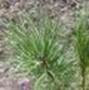
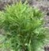

|
Фото |
Код |
Наименование, описание |
Цена, руб. |
|
Сосна (Pínus) |
|||
|
 |
6003001 |
Сосна Горная Мугус (Pínus
mugo Mughus), крона шаровидная.
Вырастает до 2–3м в высоту, в диаметре до 2–3м. Побеги распростёрты низко над
землёй, стелющиеся. Медленнорастущая, прирост до 15 см в высоту. Хвоя длиной
5–8 см. С 6–8 летнего возраста появляются шишки. |
700 |
|
Туя (Thuja) |
|||
|
 |
6005002 |
Туя Западная Даника (Thuja occidentalis Danica). Карликовый сорт с плотной сферической, с возрастом полусферической кроной. Высота взрослого растения 0,6-0,8 м. Растёт медленно. Хвоя изумрудно-зелёная. Саженцы в литровых контейнерах. |
700 |